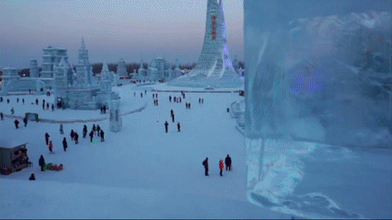

Yellowstone


Geographical Location: North America
Yellowstone is the first national park in the United States. It covers over 2.2 million acres, and provides an opportunity to see wildlife and explore geothermal areas. In fact, Yellowstone contains about half the world's active geysers.
These unique opportunities also bring out a lot of bad decisions among the tourists. Every year visitors injure themselves or the wildlife by getting close to the animals. You can see examples of people making bad decisions by visiting Yellowstone National Park: Invasion of the Idiots, Tourons of Yellowstone, or Cowboy State Daily.
Photo Gallery


Pictured Rocks National Lakeshore


Geographical Location: North America
Pictured Rocks National Lakeshore, America’s first National Lakeshore, is along the southern shore of Lake Superior in Michigan’s beautiful Upper Peninsula. With stunning beaches, 10 inland lakes, and nearly 100 miles of trails, everyone can find something to enjoy at Pictured Rocks! (source: https://www.nps.gov/piro/planyourvisit/index.htm)
No matter the time of year, there is something to do at Pictured Rocks! Summer: visit beaches, backpack, and camp (permit required). Looking for views of the cliffs? The best way to see the cliffs is from the water on a commercial boat tour. Fall: Autumn colors in the Upper Peninsula are often breathtaking, drive the park roads to view the changing leaves! Hunting and fishing opportunities (state regulations apply) abound during fall! Winter: Cold weather brings otherworldly frozen waterfalls, called “curtains”. Snowshoeing, skiing, and ice fishing are other popular winter activities. Check road closures and conditions before heading into the park in the winter. Spring: Go birding or walk the marsh trail! (source: https://www.nps.gov/piro/planyourvisit/index.htm)
Photo Gallery


Harbin

Geographical Location: Asia
Harbin, often referred to as the "Ice City," is the capital of Heilongjiang Province in northeastern China. It has beautiful winter landscapes and Russian-influenced architecture, and the city serves as a major cultural and economic hub in the region. Established in the late 19th century as a fishing village near the Songhua River, Harbin quickly transformed into a vibrant cosmopolitan center, particularly due to the construction of the Eastern Chinese Railway by Russian engineers.
Today, Harbin is most famous for its annual International Ice and Snow Sculpture Festival, where colossal ice sculptures and intricate snow art transform the city into a winter wonderland. Harbin is also famous for its unique Russian foods including the Russian sausages and beer. It is a unique blend of Chinese and Russian cultures.
Photo Gallery


Seoul, South Korea


Geographical Location: Asia
Seoul is the capital of South Korea and it is a city enshrined in history. The Han river runs through Seoul, dividing it into two parts. Additionally, there are many mountains in and around Seoul, making it so the city has a lot of hills.
Seoul is the perfect blend of modern and historical with five royal palaces and several shrines. Additionally, there are plenty of fun shopping areas in Seoul such as Hongdae, Insadong, and Gangam. Lastly, Seoul is a city of cafes with one on almost every block and several fun cafe experiences to try out, especially in Yeonnam.
Photo Gallery